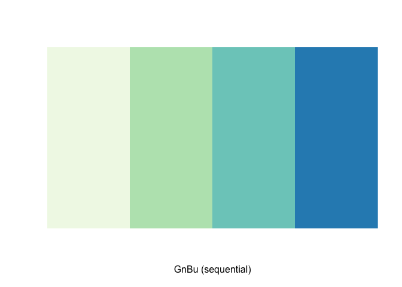

Data Visualization: ggplot
part 3
Learning Goals
At the end of this exercise, you will be able to:
1. Adjust the aesthetics of plots in ggplot using themes,
RColorBrewer, and paletteer.
2. Use faceting to produce multi-panel plots.
Group project
We will meet in our groups today to compare the data sets that we found. You should try to pick the data set that you think will be most appropriate; i.e. does it have a mix of variables, does it have a story to tell? Once you have a data set, think about the kinds of questions you might ask. Remember, in the end you will need to deliver a 5-6 minute presentation of your work. If you need help, please ask!
Resources
Load the libraries
library(tidyverse)
library(RColorBrewer)
library(paletteer)
library(janitor)
library(here)options(scipen=999) #cancels the use of scientific notation for the sessionData
For this tutorial, we will use:
Homerange.
The data are from: Tamburello N, Cote IM, Dulvy NK (2015) Energy and the
scaling of animal space use. The American Naturalist 186(2):196-211. http://dx.doi.org/10.1086/682070.
homerange <- read_csv(here("lab11", "data", "Tamburelloetal_HomeRangeDatabase.csv"))ggplot themes
There are many options to change the theme of your plots. Have a look here for some excellent examples. I am going to build a basic plot here and then use it throughout to illustrate the themes.
p <- homerange %>%
ggplot(aes(x=taxon, fill=trophic.guild))+
geom_bar(na.rm=T, position="dodge")
p
p+theme_classic()+
theme(axis.text.x = element_text(angle = 60, hjust=1))+
labs(title = "Observations by Taxon in Homerange Data",
x = NULL,
y= "n",
fill= "Trophic Guild")Legends
There are lots of options to manipulate legends. Have a look here.
p+theme_linedraw()+
theme(legend.position = "bottom",
axis.text.x = element_text(angle = 60, hjust=1))+
labs(title = "Observations by Taxon in Homerange Data",
x = NULL,
y= "n",
fill= "Trophic Guild")Not enough? ggthemes
#install.packages("ggthemes")
library(ggthemes)Here is a list of the ggthemes
ls("package:ggthemes")[grepl("theme_", ls("package:ggthemes"))]## [1] "theme_base" "theme_calc" "theme_clean"
## [4] "theme_economist" "theme_economist_white" "theme_excel"
## [7] "theme_excel_new" "theme_few" "theme_fivethirtyeight"
## [10] "theme_foundation" "theme_gdocs" "theme_hc"
## [13] "theme_igray" "theme_map" "theme_pander"
## [16] "theme_par" "theme_solarized" "theme_solarized_2"
## [19] "theme_solid" "theme_stata" "theme_tufte"
## [22] "theme_wsj"p+ theme_igray()+
theme(legend.position = "bottom",
axis.text.x = element_text(angle = 60, hjust=1))+
labs(title = "Observations by Taxon in Homerange Data",
x = NULL,
y= "n",
fill= "Trophic Guild")
RColorBrewer
The default colors used by ggplot are often uninspiring. They don’t make plots pop out in presentations or publications, and you may want to use a customized palette to make things visually consistent.
Access the help for RColorBrewer.
?RColorBrewerThe thing to notice is that there are three different palettes: 1)
sequential, 2) diverging, and 3) qualitative. Within each of these there
are several selections. You can bring up the colors by using
display.brewer.pal(). Specify the number of colors that you
want and the palette name.
display.brewer.pal(4,"GnBu")
The R Color Brewer website is very helpful for getting an idea of the color palettes. To make things easy, use these two guidelines:
+scale_colour_brewer() is for points
+scale_fill_brewer() is for fills
Here I chose the Paired palette. Take a moment and
experiment with other options.
p+scale_fill_brewer(palette = "BuPu")+
theme(legend.position = "bottom",
axis.text.x = element_text(angle = 60, hjust=1))+
labs(title = "Observations by Taxon in Homerange Data",
x = NULL,
y= "n",
fill= "Trophic Guild")Manually Setting Colors
You can also use paleteer to build a custom palette for
consistency. To access the paleteer collection, I add it to
a new object.
colors <- paletteer::palettes_d_namesNow we can display the palettes. Assign the palette to
my_palette and then build this base R bar plot. There are a
lot of options; paleteer is a collection of popular
palettes. I really like the [ggsci package] (https://cran.r-project.org/web/packages/ggsci/vignettes/ggsci.html)
my_palette <- paletteer_d("ggprism::flames")barplot(rep(1,14), axes=FALSE, col=my_palette)Now we just identify my_palette as part of
scale_fill_manual()
p+scale_fill_manual(values=my_palette)+
theme(legend.position = "bottom",
axis.text.x = element_text(angle = 60, hjust=1))+
labs(title = "Observations by Taxon in Homerange Data",
x = NULL,
y= "n",
fill= "Trophic Guild")
Adjusting the x and y limits
There are many options for adjusting the x and y axes. For details,
look over examples in the R
Cookbook. To adjust limits, we can use the xlim and
ylim commands. When you do this, any data outside the
specified ranges are not plotted.
homerange %>%
ggplot(aes(x = log10.mass, y = log10.hra, color = locomotion)) +
geom_point() +
xlim(0, 4) +
ylim(1, 6)## Warning: Removed 175 rows containing missing values (`geom_point()`).
Practice
Revisit the relationship between mass and homerange using a scatterplot, but color the points by taxonomic class using a custom color theme.
Build bar plots that show the representation by taxonomic class with carnivores and herbivores. Try using a color theme that matches your scatterplot to keep everything consistent.
Faceting
Faceting is one of the amazing features of ggplot. It allows us to make multi-panel plots for easy comparison.
Let’s use some new data on migratory birds as an example. These data are from: Wilman, Hamish; Belmaker, Jonathan; Simpson, Jennifer; de la Rosa, Carolina; Rivadeneira, Marcelo M.; Jetz, Walter (2016): EltonTraits 1.0: Species-level foraging attributes of the world’s birds and mammals. Wiley. Collection.
Here we import the data and clean the names. Because these data have a header, the skip function helps with a clean import.
ecosphere <- read_csv("data/ecs21351-sup-0003-SupplementS1.csv", skip=2, col_names = T) %>%
clean_names() %>%
separate(scientific_name, into = c("genus", "species"), sep=" ") %>%
na.omit() # remove NA's for now## Rows: 569 Columns: 21
## ── Column specification ────────────────────────────────────────────────────────
## Delimiter: ","
## chr (10): Order, Family, Common Name, Scientific Name, Diet, Life Expectancy...
## dbl (11): log10(mass), Mean Eggs per Clutch, Mean Age at Sexual Maturity, Po...
##
## ℹ Use `spec()` to retrieve the full column specification for this data.
## ℹ Specify the column types or set `show_col_types = FALSE` to quiet this message.## Warning: Expected 2 pieces. Additional pieces discarded in 16 rows [9, 64, 105,
## 245, 304, 310, 328, 331, 341, 362, 400, 401, 489, 494, 519, 538].names(ecosphere)## [1] "order" "family"
## [3] "common_name" "genus"
## [5] "species" "diet"
## [7] "life_expectancy" "habitat"
## [9] "urban_affiliate" "migratory_strategy"
## [11] "log10_mass" "mean_eggs_per_clutch"
## [13] "mean_age_at_sexual_maturity" "population_size"
## [15] "winter_range_area" "range_in_cbc"
## [17] "strata" "circles"
## [19] "feeder_bird" "median_trend"
## [21] "lower_95_percent_ci" "upper_95_percent_ci"What if we were interested in a comparison of diet and mass, i.e. how does the range of masses compare by different diet types?
ecosphere %>%
ggplot(aes(x=diet, y=log10_mass, fill=diet))+
geom_boxplot(alpha=0.4)
This is an interesting plot, but we might use a grouping function to explore the comparison to include migratory strategy.
ecosphere %>%
ggplot(aes(x=diet, y=log10_mass, fill=migratory_strategy))+
geom_boxplot(alpha=0.4)
The problem is that the plot becomes very busy. It is hard to interpret with each migratory strategy mapped. We could build separate plots for each migratory strategy, but this also makes it harder to compare. Instead, we can use faceting to make a multi-panel plot.
facet_wrap() makes a ribbon of panels, but you can
control how you want them arranged.
ecosphere %>%
ggplot(aes(x=diet, y=log10_mass, fill=migratory_strategy))+
geom_boxplot(alpha=0.4) +
facet_wrap(~migratory_strategy, ncol=4)+
theme(axis.text.x = element_text(angle = 60, hjust = 1))+
labs(title = "Mass by Diet and Migratory Strategy",
x = NULL,
y = "Log 10 Mass",
fill = "Migratory Strategy")facet_grid() allows control over the faceted variable;
it can be arranged in rows or columns.
rows~columns
ecosphere %>%
ggplot(aes(x=diet, y=log10_mass, fill=migratory_strategy))+
geom_boxplot(alpha=0.4)+
facet_grid(migratory_strategy~.)+
theme(axis.text.x = element_text(angle = 60, hjust = 1))+
labs(title = "Mass by Diet and Migratory Strategy",
x = NULL,
y = "Log 10 Mass",
fill = "Migratory Strategy")
ecosphere %>%
ggplot(aes(x=diet, y=log10_mass, fill=migratory_strategy))+
geom_boxplot(alpha=0.4)+
facet_grid(.~migratory_strategy)+
theme(axis.text.x = element_text(angle = 60, hjust = 1))+
labs(title = "Mass by Diet and Migratory Strategy",
x = NULL,
y = "Log 10 Mass",
fill = "Migratory Strategy")
ecosphere %>%
ggplot(aes(x=diet, y=log10_mass, fill=migratory_strategy))+
geom_boxplot(alpha=0.4)+
facet_grid(migratory_strategy~.)+
theme(axis.text.x = element_text(angle = 60, hjust = 1))+
labs(title = "Mass by Diet and Migratory Strategy",
x = NULL,
y = "Log 10 Mass",
fill = "Migratory Strategy")facet_grid() will also allow the comparison of two
categorical variables, just remember a~b where a is rows and b is
columns.
ecosphere %>%
ggplot(aes(x=log10_mass))+
geom_density()+
facet_grid(diet~habitat, scales = "free_y")
Practice
Build a faceted plot that shows a distribution of life expectancy by habitat type.
Try the same plot as #1 above, but include life_expectancy~habitat.
That’s it, let’s take a break!
–>Home